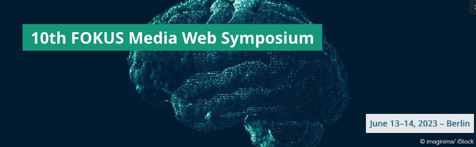
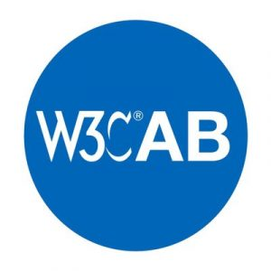
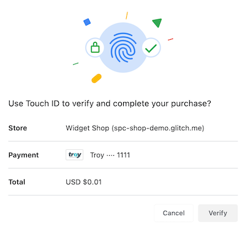
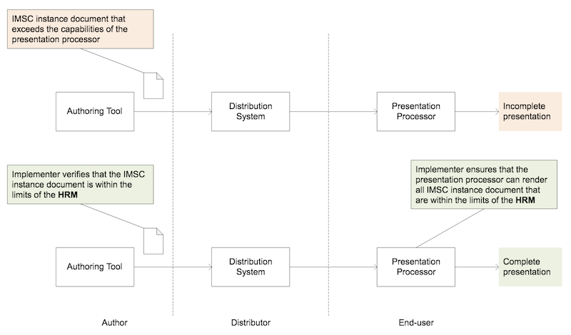
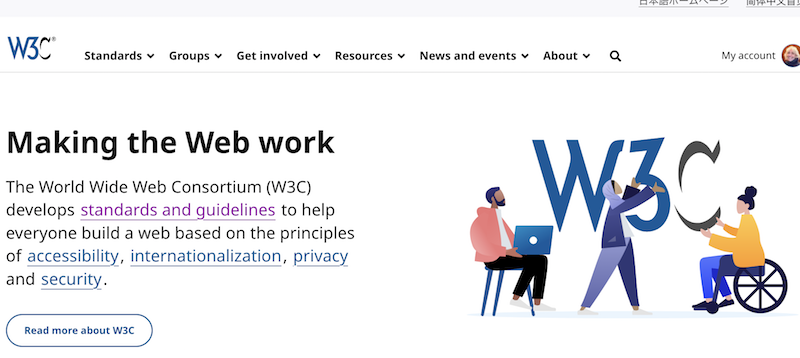

🗓️ June@w3c: @w3cx MOOCs on #CSS, #HTML5 and #JavaScript, workshop, coding contest, meetup, forum, symposium, etc. More at https://www.w3.org/participate/eventscal.html
1 June: the @wot #CommunityGroup organizes a meetup (online) on "What is #WoT" https://www.w3.org/events/meetings/177c3161-bd01-436b-a2ae-bf59412ead8f
https://twitter.com/w3cdevs/status/166428502512123085213 June - morning: register for 🆓 to the "Web technologies for applications" event in Paris, 🇫🇷! Check out the great speakers: @dontcallmeDOM, @espinr, @alexbourlier, @webmink, @utopiah, @rvailleux and @CPaterson2015 #WebTechForApps @w3c
https://systematic-paris-region.org/evenement/web-technologies-for-applications-workshop-and-coding-contest/
9 June at 11am ET: @webrtcHacks organizes a livestream interview on #WebTransport, #WebCodecs and the future of #WebRTC w/ @tidoust (@w3c), @bernard_aboba (@microsoft) and @jordicenzano (@meta) => https://webrtchacks.com/livestream/
Following a series of 2 articles: https://twitter.com/w3cdevs/status/1635667745772544000
https://twitter.com/w3cdevs/status/16642850343487078426 June: opening of a new session of @w3cx "CSS Basics" course. Learn how to style your Web site for a professional look and feel with #CSS on @edXOnline
https://edx.org/course/css-basics
https://twitter.com/w3cdevs/status/166428503144204697613 June - afternoon: 🏆PRIZES to WIN! Students are invited to a coding contest in #Paris where they'll develop and test a light app for the promotion of the resources of a city - #PWA #MiniApp #QuickApp #AppClips
Register! https://my.weezevent.com/coding-contest-1306
https://twitter.com/w3cdevs/status/166428503809001062813-14 June: @tidoust explores the future of real-time video processing with #WebCodecs and #Streams at the 10th "Media Web Symposium" event @fraunhoferfokus in #Berlin, 🇩🇪
https://www.fokus.fraunhofer.de/go/mws/detailed-program
https://twitter.com/w3cdevs/status/166428504207881012119-20 June: The @W3CChina staff organizes a Web Technology Forum: "Infinite Intelligence and Secure Connection" in Beijing, 🇨🇳
https://www.w3.org/china-web-forum-in-beijing-202306/index.html
https://twitter.com/w3cdevs/status/166428504541747609927 June: opening a new session of the @w3cx "#JavaScript Introduction" #MOOC w/ Prof. @micbuffa via @edxOnline - Enroll now! https://www.edx.org/course/javascript-introduction
https://twitter.com/w3cdevs/status/166428505150341530127 June: new session of the #HTML5 Coding Essentials and Best Practices @w3cx #MOOC with Prof. @micbuffa on @edXOnline
https://www.edx.org/course/html5-coding-essentials-and-best-practices
https://twitter.com/w3cdevs/status/1664285048546422784Congrats to @t (@mozilla), @fantasai (@Apple), @wendy_a_reid (@RakutenGroup), Avneesh Singh (@accessibledaisy), @cwilso (@Google) and Song XU (@ChinaMobile7) 👏👏👏 https://twitter.com/w3c/status/1665671132681306113
The @ab's priorities for 2023 are listed in: https://www.w3.org/wiki/AB/2023_Priorities
https://twitter.com/w3cdevs/status/1665682508204187651Congrats to editors Joanmarie Diggs, James Nurthen, Michael Cooper and Carolyn MacLeod for the newly published @w3c #WebStandard "WAI ARIA 1.2" #accessibility #a11y #timetoadopt
https://www.w3.org/TR/wai-aria-1.2/ https://twitter.com/w3c/status/1665964035492249601
https://twitter.com/w3cdevs/status/1666052621461860352Share anything!
The Web Share #API allows to share texts, links, files, etc. by way of sharing targets, such as social networks and messaging apps (as typically provided by mobile OSes). Browser support is excellent on mobile devices https://caniuse.com/web-share
Congrats to editors @mgiuca, @eric_willigers and Marcos Cáceres for the newly published @w3c #WebStandard "Web Share API" https://www.w3.org/TR/web-share/ #timetoadopt https://twitter.com/w3c/status/1663436274215026688
https://twitter.com/w3cdevs/status/1666104364702867457今週のリリース @w3c "Accessible Rich Internet Applications (WAI-ARIA) 1.2" #WebStandard は日本語に翻訳されています https://momdo.github.io/wai-aria-1.2/ どうもありがとう @momdo_! #w3c_keio #translation 🇯🇵 https://twitter.com/w3c/status/1666763585958170625
https://twitter.com/w3cdevs/status/1666783428493078531🛒 E-commerce has witnessed significant growth in the past 15 years, with online payment fraud increasing in parallel. To combat this, multifactor authentication has been mandated in some jurisdictions. However, it often adds checkout friction, leading to cart abandonment
A new browser capability, Secure Payment Confirmation (SPC), has reached a standardization milestone, revolutionizing web checkout by harmonizing user authentication and streamlining payment security #payments #timetoimplement https://www.w3.org/TR/2023/CR-secure-payment-confirmation-20230615/ https://twitter.com/w3c/status/1669325320405540866
https://twitter.com/w3cdevs/status/1669327941866606594🔒 SPC enhances user confidence in online transactions. It reduces friction for strong customer authentication (SCA) and provides cryptographic evidence of user consent, meeting regulatory requirements like the Payment Services Directive (PSD2) in Europe https://www.ecb.europa.eu/paym/intro/mip-online/2018/html/1803_revisedpsd.en.html
https://twitter.com/w3cdevs/status/1669327945679216640Pilots were conducted and compared to one-time passcodes (OTP), SPC authentication led to an 8% increase in conversions with a 3 times faster checkout! https://www.w3.org/blog/2021/03/secure-payment-confirmation-stripe-experiment-and-next-steps/
https://twitter.com/w3cdevs/status/1669327943804284929👥 @w3c, @FIDOAlliance and @emvco work together in the Web Payment Security #InterestGroup to develop interoperable specifications. SPC is built on #WebAuthn and integrated into EMV® 3-D Secure and EMV® Secure Remote Commerce. #Collaboration
https://twitter.com/w3cdevs/status/1669327951232393218💳 SPC is not limited to card payments. The Web Payments #WorkingGroup explores its integration into other ecosystems, including Open Banking, PIX (Brazil) and other payment flows, to offer a common authentication method across platforms https://www.w3.org/groups/wg/payments/publications
https://twitter.com/w3cdevs/status/1669327947990171651We invite feedback in the related #GitHub repo: https://github.com/w3c/secure-payment-confirmation/issues/
https://twitter.com/w3cdevs/status/1669327955980427264Currently available in Chrome and Edge on MacOS, Windows and Android, SPC will seek implementation in other browsers and environments. Check the test suite out: https://wpt.fyi/results/secure-payment-confirmation?label=experimental&label=master&aligned
https://twitter.com/w3cdevs/status/1669327953862225920Do you need to render complex #subtitles and #captions along a #video on possibly constrained devices such a #TV sets? https://www.w3.org/TR/imsc-hrm/ #timetoimplement https://twitter.com/w3c/status/1671800182172708865
The IMSC-HRM spec defines a complexity model and a quality check for authors to validate that IMSC captions will render smoothly on targeted devices, and for implementers to ensure that their playback system can render the captions at the appropriate time.
https://twitter.com/w3cdevs/status/1673687336897372161Feedback is welcome in #GitHub at https://github.com/w3c/imsc-hrm/
https://twitter.com/w3cdevs/status/1673687344270934017📢 The redesigned @w3c website is now live! 🎉 https://www.w3.org/
After months of preparation and a beta version, we're excited to launch a modern and inclusive site with a cleaner design and improved user-friendliness, implementing current web best practices. Behind the scenes, the entire infrastructure was revamped #W3CWebsiteRedesign
https://twitter.com/w3cdevs/status/1673733388359041027While there's more to come, we're grateful to @studio24 and @w3c_systeam for their invaluable contributions. We invite feedback via this #GitHub repo: https://github.com/w3c/w3c-website 🙏
https://twitter.com/w3cdevs/status/1673733396315488272Redesigning one of the oldest websites was a monumental task. It involved user research, selecting a CMS platform, designing a robust technical architecture, ensuring #accessibility, crafting engaging content, #internationalization efforts, UX design, and much more.
https://twitter.com/w3cdevs/status/1673733394381848576